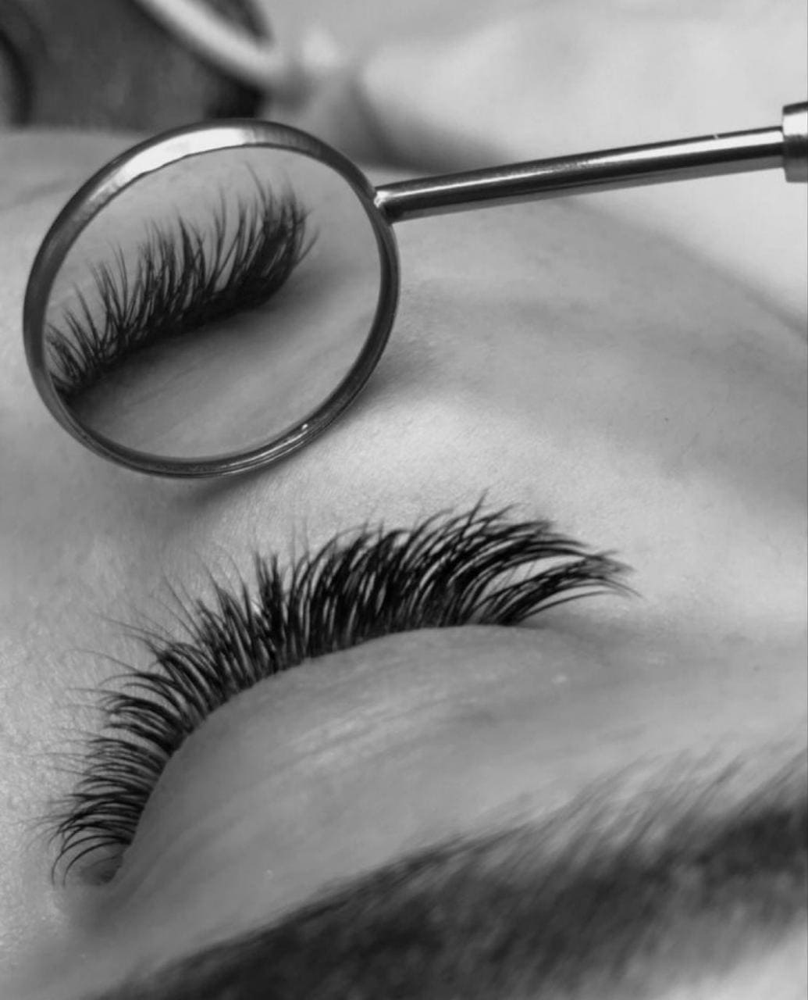

Sobre ALIlashes
Ubicada en el corazón de la ciudad, la ALIlashes trae para el mercado lo que hay de mejor para sus pestañas. Fundada en 2020, ALIlashes ya es destaque en la ciudad y conquista nuevos clientes diariamente.
Nuestra misión es: "Proporcionar autoestima y calidad de vida a nuestros clientes".
Ofrecemos productos profesionales para expertos de pestañas, que están constantemente observando los cambios y movimiento en el mundo de la moda, para así ofrecer a nuestros clientes las últimas tendencias. El atendimiento posee un padrón de excelencia y agilidad, garantizando calidad y satisfacción de nuestros clientes.
"Nuestra Ubicación"
Nuestro establecimiento esta en el corazon de la ciudad
Diferenciales
- Atención personalizada a los clientes
- Espacio diferenciado
- Localización
- Profesionales calificados
- Equipo Calificado
- Un Lugar Único